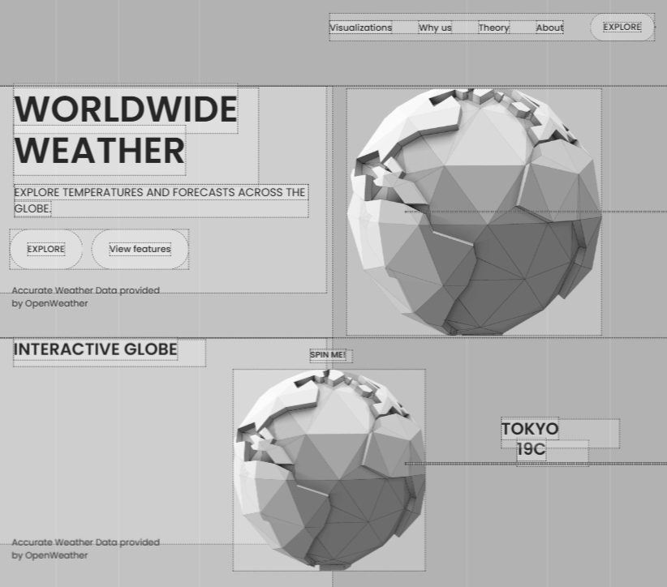
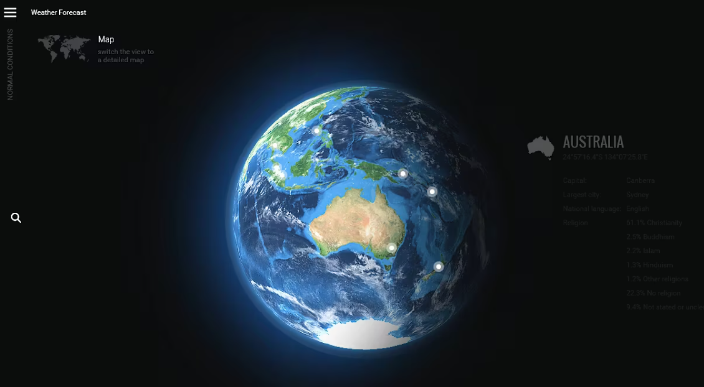
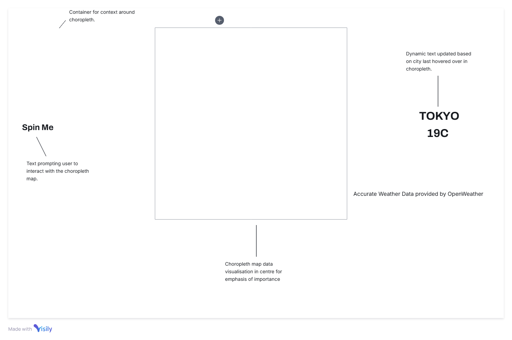
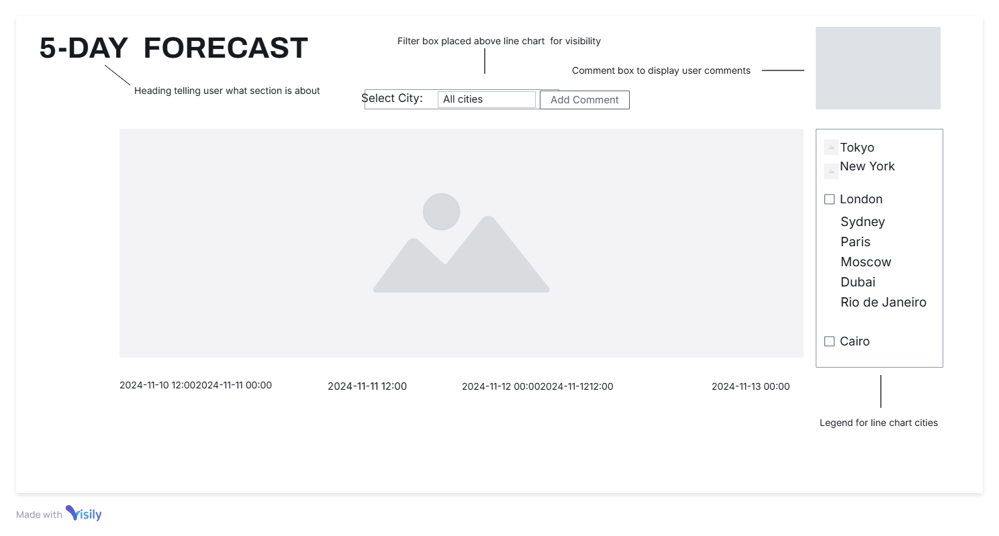

My original design for the website. I initially wanted this to be a data visualization project that tracks the melting of icebergs and carbon gas emissions. The idea was to have the iceberg slowly melt, but I could not find any APIs that shared the data I needed.
A wireframe of my final design. I wanted to have the choropleth map be a polygonal low poly globe, but in the end, settled for a standard globe choropleth.
Some of the layout inspiration. I really liked the idea of having the heading on the left and a supporting image on the right, as most people tend to read from left to right.
Where I got my inspiration for the choropleth map section.
A wireframe showcasing the landing page.
A wireframe of the choropleth map.
Wireframe of the bar graph.
The emphasis here is on visual hierarchy to help users quickly find critical information.
Wireframe of the contact form.
The design of this website was made with the goal of being an engaging and informative experience for users. The mainly blue and black color scheme was chosen to give the feel of watching the Earth from space and tracking various temperatures around the world. Although this was initially supposed to track the melting of icebergs, it was hard for me to find APIs that worked for this project and I eventually found the OpenWeather API.
Although there is a bar graph as well, my main focus was getting a working choropleth map. After my Critical Analysis Essay assignment, which can be found on the theory section of the website, I really liked the idea of using a choropleth map to visualize data, especially data that included the whole world.